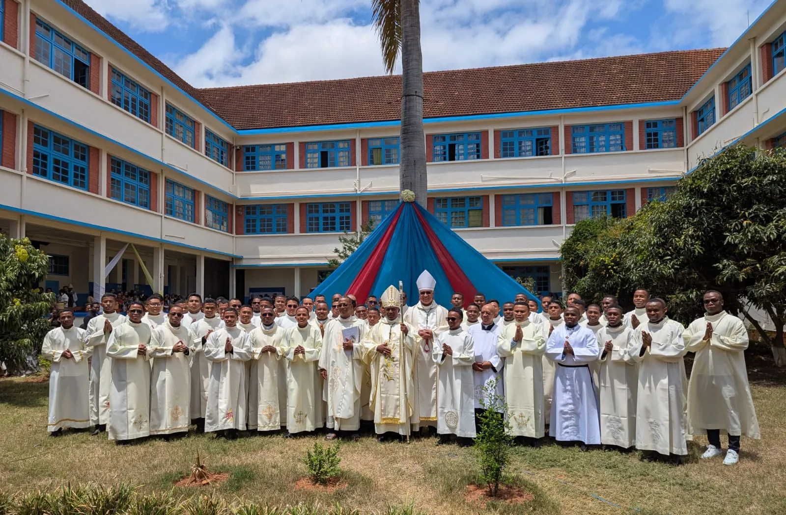
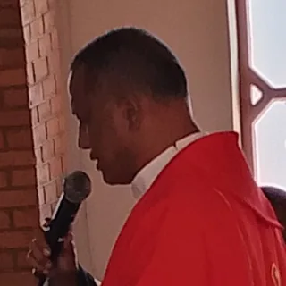

Bienvenue sur le portail du Grand Séminaire
Pour la vie du séminaire, votre nom et votre fonction ou année (avec le diocèse pour les étudiants) apparaissent dans l’annuaire public ; votre photo, l’email et le téléphone que vous indiquez n’y sont visibles que par les membres connectés. Vos notes et documents restent visibles seulement par les personnes autorisées. Vous pouvez masquer vos coordonnées à tout moment dans « Mes coordonnées ».
Votre compte
Choisissez votre mot de passe
Au moins 8 caractères. Gardez-le pour vous : personne au séminaire ne le connaîtra.

À la une · 25 octobre 2026
Fête patronale et institution des lecteurs et des acolytes
En la fête de sainte Thérèse de l’Enfant-Jésus, patronne du séminaire, les séminaristes ont été institués au ministère du lectorat et de l’acolytat, entourés des évêques et des éducateurs, dans la cour du Grand Séminaire de Théologie de Faliarivo.
Studium de premier cycle · Baccalauréat canonique de théologie
Fides quaerens intellectum
La foi en quête de l'intelligence
Le GSTF forme les candidats au sacerdoce des diocèses et des congrégations religieuses de Madagascar. Sa visée est double : approfondir et structurer personnellement la foi chrétienne, et recevoir une formation universitaire en théologie en vue du ministère de prêtre.
Devise de l’année 2026–2027
« Vous êtes tous frères. »
Parole du Recteur
« Dans le cœur de l’Église, ma Mère, je serai l’Amour »Sainte Thérèse de Lisieux
Prendre en main sa vocation
Le cycle de « configuration au Christ » est la dernière étape de la formation en vue du Sacerdoce ; c’est le cycle triennal d’études en Théologie où le candidat est invité à prendre en main sa propre vocation. Conformément aux consignes de Rome et fidèle à la ligne directrice tracée par la Congrégation pour le Clergé (Ratio Fundamentalis Rome 2016), la formation au Grand Séminaire de Théologie « Sainte-Thérèse de l’Enfant-Jésus » à Faliarivo se veut être intégrale en quatre dimensions (humaine, spirituelle, intellectuelle et pastorale) dont le fil conducteur est double : la vie communautaire et la conscience d’une mission commune à la suite du Christ.

RP Abdon Rafidison
Recteur du Grand Séminaire de Théologie
Prendre en main sa vocation
Le cycle de « configuration au Christ » est la dernière étape de la formation en vue du Sacerdoce ; c’est le cycle triennal d’études en Théologie où le candidat est invité à prendre en main sa propre vocation. Conformément aux consignes de Rome et fidèle à la ligne directrice tracée par la Congrégation pour le Clergé (Ratio Fundamentalis Rome 2016), la formation au Grand Séminaire de Théologie « Sainte-Thérèse de l’Enfant-Jésus » à Faliarivo se veut être intégrale en quatre dimensions (humaine, spirituelle, intellectuelle et pastorale) dont le fil conducteur est double : la vie communautaire et la conscience d’une mission commune à la suite du Christ.
Les éducateurs au Grand Séminaire de Théologie à Faliarivo
Les éducateurs au Grand Séminaire de Faliarivo sont au nombre de sept prêtres résidents dont le mot d’ordre est double : la présence et le témoignage. Parmi les éducateurs, il y a aussi une religieuse non résidente pour s’occuper de l’intendance. La répartition des tâches suit fidèlement les consignes de la nouvelle Ratio Fundamentalis (RF) pour la formation des prêtres. Le Grand Séminaire étant de l’Archidiocèse du Centre, les éducateurs sont originaires de cette Circonscription Ecclésiale du Centre.
L’équipe formatrice au moment actuel est dirigée par le Recteur qui s’occupe aussi de la coordination de la dimension pastorale. Le Recteur est secondé par un deuxième prêtre, le vice-Recteur, qui est aussi le cérémoniaire pour les grands événements au séminaire. Le troisième prêtre se charge de la dimension humaine ; le quatrième prêtre pour la dimension spirituelle ; le cinquième prêtre pour la dimension intellectuelle ; le sixième prêtre pour l’économat accompagné du septième prêtre nommé commissaire au compte.
À part ces éducateurs résidents au Séminaire, les enseignants, en majorité des prêtres, sont aussi sollicités à apporter leur contribution non seulement à la transmission de connaissance mais aussi à la formation intégrale des candidats. Il y a aussi les prêtres désignés par leur diocèse respectif pour servir de lien entre le Séminaire et le diocèse : ce sont les correspondants diocésains.
Les quatre dimensions de la formation au Grand Séminaire
La dimension humaine de la formation en vue du Sacerdoce
Considérée comme « "la base nécessaire et dynamique" de toute la vie presbytérale » (RF 89), « la formation humaine du prêtre revêt une importance particulière en raison de sa relation aux destinataires de sa mission. En effet, pour que son ministère soit humainement plus crédible et plus acceptable, il faut que le prêtre modèle sa personnalité humaine de façon à en faire un "pont" et non un obstacle pour les autres dans la rencontre avec Jésus Christ Rédempteur de l'homme » (Pastores Dabo Vobis 43).
« Les séminaristes doivent être bien convaincus qu’ils ne sont pas destinés à la domination et aux honneurs, mais tout entiers voués au service de Dieu et au ministère pastoral. Qu’on apporte un soin particulier à développer en eux l’obéissance sacerdotale, la vie de pauvreté et l’esprit d’abnégation » (Optatam totius 9).
Conformément à cet appel du Concile et en tenant compte de la grande diversité des séminaristes formés ici au Grand Séminaire, on essaie de donner une place privilégiée à la vie communautaire et au respect que cela exige. Chaque année, le thème proposé tourne autour de l’importance de cette vie commune.
Pour ce faire, des activités sont organisées ; elles peuvent être journalières ou hebdomadaires. Tous les séminaristes sont conviés à y participer et les répartitions se font généralement par groupe d’activités (au nombre de cinq). Chaque groupe d’activité est dirigé par un « chef » qui anime les membres à la réalisation de la tâche qui incombe.
Au Séminaire, les organisations sportives servent aussi à tisser ce lien communautaire. Il y a à notre disposition des terrains de foot, de basket et de volley-ball. Ceux qui ne peuvent pas pratiquer aux jeux collectifs pour une raison particulière peuvent aussi pratiquer à d’autres jeux (ping-pong, pétanque…). Les jeux se font généralement après le repas de midi jusqu’à 14 heures trente. Des matches entre les séminaristes sont organisés chaque trimestre (par promotion ou par groupe ou par bâtiment).
La dimension spirituelle de la formation en vue du Sacerdoce
La vie spirituelle concerne « la vie selon l’Esprit Saint » (Rm 8,9), « une vie animée et guidée par l’Esprit Saint vers la sainteté et la perfection de la charité » (Pastores Dabo Vobis N°19). Appliquée à la vie du prêtre, une spiritualité ainsi conçue met au premier plan l’Esprit Saint qui le pousse et le conduit à la consécration et à la mission sacerdotale du Christ. Ce qui fait qu’à l’exercice du ministère ordonné correspond une vie spirituelle qui s’inspire du sacrement de l’ordre lui-même.
La formation spirituelle est la première des exigences qui incombent à un futur prêtre. Ce n’est pas l’ordination seule qui configure le prêtre au Christ, mais c’est l’ensemble du cheminement que le prêtre entreprend au fil des jours, cheminement qui commence dès le séminaire et, qui vise à vivre en communion d’amour avec le Père, dans l’Esprit Saint, par le Christ son Fils, le Mystère de sa Pâque.
« La formation spirituelle doit avoir un lien étroit avec la formation doctrinale et pastorale et, avec l’aide principalement du directeur spirituel, elle doit être donnée de telle façon que les séminaristes apprennent à vivre continuellement dans la familiarité du Père, par son Fils Jésus-Christ, dans l’Esprit-Saint » (Optatam Totius N°8).
Pour parvenir à cette union avec la très Sainte Trinité, au Séminaire, on donne de l’importance à la centralité de la célébration eucharistique journalière : elle est communautaire chaque lundi, mardi et vendredi ; par groupe chaque mercredi et jeudi et par promotion chaque samedi. Chaque dimanche, les séminaristes vont en paroisse pour le ministère pastoral.
Chaque jour, on consacre trente minutes de méditation et autres trente minutes pour la lectio divina. L’exercice de l’Office divin se fait aussi suivant les répartitions de la célébration eucharistique mentionnées ci-dessus. On incite les séminaristes à la visite du Saint-Sacrement qu’ils pratiquent spontanément après chaque repas. Les prières avec Marie s’organisent aussi quotidiennement par groupe spontané.
Tous les vendredis de 18 heures à 19 heures, un Prêtre éducateur et responsable de la promotion donne une conférence spirituelle à chaque promotion. Tandis que tous les premiers jeudis du mois, tous les séminaristes (par groupe ou par promotion ou communautaire) ont une journée de récollection prêchée généralement par un Prêtre invité. La veille de cette journée, une heure d’adoration eucharistique a lieu durant laquelle quelques points de méditation sont donnés par l’éducateur responsable de la semaine.
Chaque année, les respectifs diocèses s’organisent pour donner une semaine de retraite à leurs séminaristes. Cette retraite se fait d’habitude dans leur propre diocèse avant le début de chaque année académique. Généralement, les séminaristes rapportent à titre d’information, aux éducateurs le thème prêché lors de chaque retraite.
Arrivé au Séminaire, chaque séminariste doit choisir un directeur spirituel, soit parmi les éducateurs à part le recteur, soit parmi les curés des paroisses aux alentours, soit parmi les enseignants. Il est convié à chaque séminariste d’aller s’entretenir avec lui tous les mois. Cette fréquence est exigée et le Séminaire, vers la fin de l’année académique demande à chaque directeur spirituel le nombre de rencontres.
La dimension intellectuelle de la formation en vue du Sacerdoce : Cycle théologique
Il est dit dans le rite d’ordination sacerdotale : « Tu veux, Seigneur, que ton peuple tout entier participe au sacerdoce de ton Fils ; et Tu confies à certains de ses membres la charge de le sanctifier, de le conduire et de l’enseigner au nom du Christ. Accorde à N., dont Tu vas faire son prêtre, la grâce d’être fidèle à sa mission. Que par son ministère et toute sa vie, il aide les hommes et serve ta Gloire. Amen ». Cette charge d’« enseigner au nom du Christ » ne va pas de soi, elle exige l’acquisition nécessaire de la connaissance des « études ecclésiastiques » et d’autres connaissances sur l’homme et sur le monde.
L’acquisition de ces connaissances se fait au Séminaire où le temps consacré aux études est le plus volumineux dans ces maisons de formation. Ce qui fait comprendre l’importance de la dimension intellectuelle pour la formation sacerdotale. La mise en garde du Pape François concernant l’importance de la dimension intellectuelle est pertinente : « le monde ne tolère pas la piètre figure d’un prêtre qui ne comprend pas les choses, qui n’a pas de méthode pour comprendre les choses et qui ne sait pas dire les choses de Dieu de manière fondée » (Pape François, décembre 2016).
Conformément aux normes exigées par le décret conciliaire Optatam Totius N°16, les études se répartissent en trois grandes parties : premièrement, une grande place à l’Écriture Sainte, toute la Bible est étudiée pendant les trois années de présence ici au Séminaire. Deuxièmement, la Théologie dogmatique dont les matières sont : la Christologie, la Pneumatologie, les Sacrements, l’Ecclésiologie, la Théologie trinitaire, la Théologie spirituelle, la Mariologie et la Dogmatique spéciale (Théologie la Sainte Trinité, Théologie de la Création, Théologie du Péché originel et Théologie de la Grâce).
Enfin, les autres disciplines théologiques. Il s’agit des études de : Code de Droit canonique, Œcuménisme, Latin, Morale fondamentale, Morale sociale, Bioéthique, Liturgie, Musique sacrée, Missiologie, Histoire de l’Église universelle et locale, Histoire des Conciles, Anthropologie, Théologie des religions et Pastorale pratique.
À chaque fin de semestre, les séminaristes passent aux examens les matières étudiées tandis que trois Travaux Pratiques de dix à quinze pages chacun doivent être faits chaque année académique. Le Séminaire organise chaque année un symposium dont le thème est varié suivant les circonstances. Ce symposium sert surtout de séparer les deux semestres de l’année académique.
La dimension pastorale de la formation en vue du Sacerdoce
Toute la formation sacerdotale est en vue de la pastorale. L’exhortation post-synodale du Pape Jean-Paul II est explicite sur ce point : « toute la formation des candidats au sacerdoce est destinée à les disposer d'une façon plus particulière à communier à la charité du Christ Bon Pasteur. Cette formation doit donc, dans ses divers aspects, avoir un caractère essentiellement pastoral » (Pastores Dabo Vobis N°57).
« Le souci pastoral qui doit informer toute la formation des séminaristes exige aussi qu’ils reçoivent une préparation en ce qui concerne spécialement le ministère… Aussi, déjà pendant leurs études, ainsi que pendant les vacances, doivent-ils s’initier à la pratique de l’apostolat par des activités bien choisies » (Optatam Totius N°19.21).
En général, le ministère exercé par les séminaristes au GSTF se divise en trois : ministère auprès des écoles catholiques (enseignement de la catéchèse), ministère dans les paroisses et ministère auprès des aumôneries catholiques. Les séminaristes en première année sont répartis dans des écoles catholiques de la ville où ils vont tous les jeudis tandis que ceux de la deuxième et de la troisième années sont envoyés dans des paroisses et dans des aumôneries.
Chaque séminariste est présenté par le Séminaire au responsable de chaque poste par une lettre d’envoi au début de l’année académique tout en indiquant l’importance du ministère pour la formation en vue du sacerdoce. Il est convié aux séminaristes de bien s’entretenir avec ces responsables de ces postes à qui le Séminaire demande un rapport des activités pastorales vers la fin de l’année académique.
Comme chaque année, à la fête de Sainte Thérèse de l’Enfant-Jésus, la patronne du Séminaire, les séminaristes en quatrième année de Théologie s’engagent au service de lectorat et d’acolytat. Ils exercent ce service ici au Séminaire et là où ils sont envoyés en ministère. Les Prêtres responsables des paroisses sont avisés par le recteur du Séminaire de cette institution.
« Je vous donnerai des pasteurs selon mon cœur » (Jr 3, 15)
Une formation intégrale
Le Grand Séminaire suit les orientations du Ratio Fundamentalis Institutionis Sacerdotalis, Le don de la vocation presbytérale, publié par la Congrégation pour le Clergé le 8 décembre 2016. Ce document présente la formation du futur prêtre comme un chemin unique et progressif, en quatre dimensions – humaine, spirituelle, intellectuelle et pastorale – « qui interagissent simultanément dans l’iter de formation » (n. 89), sans qu’aucune soit négligée au profit des autres. Ensemble, elles visent à configurer le séminariste au Christ, « Tête, Pasteur, Serviteur et Époux » (n. 35).
Un chemin en quatre étapes
Le Ratio Fundamentalis présente la formation comme un chemin progressif, en quatre étapes. Le Grand Séminaire de Théologie de Faliarivo accueille la troisième étape, celle des études théologiques.
- 1
L’étape propédeutique (n. 59)
Un temps de commencement pour « poser des bases solides pour la vie spirituelle ».
- 2
L’étape des études philosophiques (ou de formation du disciple) (nn. 61-67)
« Ce temps spécifique se caractérise par la formation du disciple de Jésus destiné à être pasteur ».
- 3
C’est ici : le GSTF
L’étape des études théologiques (ou de configuration au Christ) (nn. 68-73)
Ici, « la formation se concentre sur la configuration du séminariste au Christ, Pasteur et Serviteur ».
- 4
L’étape pastorale (ou de synthèse vocationnelle) (nn. 74-77)
Le futur prêtre apprend à « s’insérer dans la vie pastorale en assumant progressivement plus de responsabilités, dans un esprit de service ».
📄 Lire le document complet : Le don de la vocation presbytérale. Ratio Fundamentalis Institutionis Sacerdotalis, Congrégation pour le Clergé, 8 décembre 2016 · texte français (PDF, site du Saint-Siège) ↗ · documents officiels de la Congrégation pour le Clergé (vatican.va) ↗
Citations : Congrégation pour le Clergé, Le don de la vocation presbytérale. Ratio Fundamentalis Institutionis Sacerdotalis, 8 décembre 2016.
Le séminaire en chiffresReplier ▴
Effectifs de l'année académique 2026–2027.
Origine des étudiants
9 diocèses
La taille de chaque point indique le nombre de séminaristes. Le séminaire se trouve à Faliarivo, Antananarivo (✚).
11 congrégations religieuses
Prochaines dates
📅 Voir les prochaines dates▾
En souvenir · 31 janvier 2017
La visite du cardinal Pietro Parolin
Le 31 janvier 2017, le cardinal Pietro Parolin, Secrétaire d’État du Saint-Siège, en visite à Madagascar pour les cinquante ans des relations diplomatiques avec le Saint-Siège, a présidé la messe au Grand Séminaire de Théologie de Faliarivo, entouré des évêques de Madagascar, des éducateurs et des séminaristes.
📖 En savoir plus sur le séminaireNotre patronne · notre histoire · l’admission et le règlement · l’équipe formatrice et les foyers · les groupes

Notre patronne
Sainte Thérèse de l’Enfant-Jésus
« Je veux passer mon Ciel à faire du bien sur la terre. »
« Ma vocation, c’est l’amour ! »
Carmélite de Lisieux (1873-1897), canonisée en 1925, proclamée patronne des missions en 1927 et docteur de l’Église en 1997. Sa « petite voie » de confiance et d’amour inspire la vie de notre communauté et la formation des futurs prêtres.
Fête : 1er octobre
Depuis 1930
Notre histoire
Conditions d'admission
Le Studium est ouvert à tout candidat au sacerdoce ayant achevé deux années de philosophie et une année de théologie fondamentale.
- ✓Présentation écrite par l'évêque ou le supérieur religieux.
- ✓Relevé de notes des trois années précédentes.
- ✓Inscription et réinscription auprès du Recteur ou du Préfet des études, à la fin de l'année académique en cours.
Règlement des études
- 07:55Ponctualité exigée le matin, et à 14:25 l'après-midi.
- 10/20Une seule matière sous la moyenne exclut l'admission au diplôme de licence préparé avec l'UCM.
- —Pas de repêchage ; aucun cours facultatif.
- —Une note attribuée ne peut être ni modifiée arbitrairement ni falsifiée.
L'équipe formatrice
Tous les enseignants sont à la fois éducateurs et formateurs. Le corps enseignant compte 32 membres.
Les foyers religieux
Intentions de prière
Confiez-nous une intention
La communauté du séminaire la portera dans sa prière. Elle reste discrète : rien n’est affiché sur le site sans l’accord du séminaire.
Restons en lien
Suivez-nous et partagez
Retrouvez la vie du séminaire en photos et en vidéos.
Faites connaître le séminaire autour de vous
Soutenir le séminaire
Aidez à former les prêtres de demain
Le séminaire vit grâce à la générosité de ses amis et bienfaiteurs. Un don, même modeste, aide à nourrir, loger et former les futurs prêtres de Madagascar.
Une question, une visite, une admission ?
Adresse, téléphones, horaires du secrétariat et formulaire pour écrire au séminaire.
Vie spirituelle
Prières du séminaire
Pour prier avec la communauté de Faliarivo. Dans l’application installée sur le téléphone, ces prières restent disponibles même sans connexion Internet.
Grand Séminaire de Théologie Sainte Thérèse de l’Enfant-Jésus · Faliarivo
Confidentialité et données personnelles
Le Grand Séminaire de Théologie Sainte Thérèse de l’Enfant-Jésus (Faliarivo - Ambanidia, Lot VB 5 bis, 101 Antananarivo) est responsable des données personnelles traitées par ce site, dans le respect de la loi malgache n° 2014-038 sur la protection des données à caractère personnel.
Quelles données, et pourquoi
- Étudiants : nom, prénoms, année, diocèse ou congrégation, photo, email et téléphone personnels, notes, présences, bulletins. Pour l’organisation des études, la délivrance des bulletins et la vie communautaire.
- Professeurs, éducateurs, responsables de foyers : nom, fonction, photo, coordonnées, matières enseignées.
- Demandes d’inscription : identité, coordonnées et pièces du dossier, pour l’examen de la candidature.
- Messages du formulaire de contact : nom, email et message, pour vous répondre.
Qui y a accès
- Chaque étudiant voit ses propres notes, présences et bulletins.
- Chaque professeur voit les étudiants et les notes de ses matières ; les éducateurs et les responsables de foyers consultent, sans pouvoir les modifier, les étudiants qui les concernent.
- Pour savoir combien de personnes visitent le site, chaque visite est comptée sans cookie publicitaire, sans adresse IP et sans nom : seulement la page vue, le pays (d’après le fuseau horaire) et le type d’appareil.
- L’annuaire public montre seulement les noms, la fonction ou l’année et le diocèse ; la photo, l’email et le téléphone ne sont visibles que par les membres connectés du séminaire, et chacun peut masquer ses coordonnées dans « Mes coordonnées ».
- Les pièces d’inscription, documents de cours, photos de profil et archives sont privés : seules les personnes autorisées peuvent les ouvrir.
- Seuls le Préfet des études, le Recteur et le secrétariat administrent l’ensemble. Aucune donnée n’est vendue ni transmise à des tiers.
Combien de temps
- Les bulletins archivés sont conservés sans limite, pour pouvoir délivrer des attestations aux anciens étudiants.
- Les demandes d’inscription refusées sont effacées au plus tard un an après la décision.
- Les comptes des anciens étudiants sont désactivés à leur départ.
Sécurité
Connexion chiffrée (HTTPS) ; mots de passe enregistrés sous une forme que personne ne peut lire ; accès contrôlés par la base de données elle-même. Le site est hébergé par Netlify et Supabase.
Vos droits
Vous pouvez demander à consulter, corriger ou effacer vos données, ou retirer votre accord pour la photo et l’annuaire, en écrivant au secrétariat : seminairetheo@yahoo.fr · +261 38 21 220 21.
Dernière mise à jour : novembre 2026.
Bibliothèque
Bibliothèque du séminaire
📥 Ajouter une liste de livres au catalogue
Réservé au bibliothécaire et aux administrateursUne ligne par livre, par exemple « La Bible de Jérusalem – École biblique – Cerf ». La liste lue s’affiche d’abord : vous corrigez, puis vous ajoutez.
Vous pouvez aussi glisser un fichier Word, PDF ou une photo sur ce cadre. Pour une photo : feuille bien à plat, à la lumière du jour, texte net. L’écriture à la main est mal lue : vérifiez bien chaque ligne.
Gestion de la bibliothèque
Inscription
Choisissez votre espace
Pour vous inscrire ou vous connecter, cliquez sur l’espace qui vous concerne.
Vérification
Carte d’étudiant
Agenda
Agenda de la communauté
Récollections, retraites, examens, fêtes, ordinations, visites. Touchez « Ajouter à mon agenda » pour l’avoir dans le calendrier de votre téléphone.
Anciens
Anciens du séminaire
Les prêtres formés à Faliarivo depuis 1998 : promotion, diocèse, ordination.
Entretiens
Rendez-vous avec Père Préfet
Économat
Soutenir le séminaire
Réservé à l’économat et à l’équipe éducatrice
Caisse du séminaire
Administration · éducateurs
Archives des bulletins
Bulletins de notes des années passées et des anciens étudiants : consultation, impression et téléchargement en PDF.
Archiver une année
Chaque 1er juillet, à la fin de l’année académique, la base de données archive automatiquement le bulletin de chaque étudiant, avec un code d’authenticité. Ces bulletins archivés sont définitifs : personne ne peut plus les modifier. Ce bouton sert seulement si l’archivage automatique n’a pas eu lieu.
Pour obtenir un fichier PDF : « Télécharger », puis dans la fenêtre d’impression choisissez « Enregistrer au format PDF » comme imprimante.
Mémoire du séminaire
Événements inoubliables
Ordinations, jubilés, visites, fêtes, pèlerinages : les grands moments vécus au Grand Séminaire de Faliarivo, en photos et en vidéos. Les actualités de plus de 3 mois sont rangées ici automatiquement et y restent pour toujours.
Grand Séminaire de Théologie Sainte Thérèse de l’Enfant-Jésus · Faliarivo
Articles
Articles, livres et documents publiés par le Grand Séminaire.
📬 Recevez gratuitement nos nouveaux articles par email
Chaque nouvel article dans votre boîte email, dès sa parution. Gratuit, sans mot de passe, désabonnement en un clic.
Grand Séminaire de Théologie Sainte Thérèse de l’Enfant-Jésus · Faliarivo
Contact
Nous joindre
- Adresse
- Grand Séminaire de Théologie
Sainte Thérèse de l’Enfant-Jésus
Faliarivo - Ambanidia
Lot VB 5 bis
101 Antananarivo, Madagascar - Téléphone
- +261 38 21 220 21
- Courriel
- seminairetheo@yahoo.fr
- Économat
- +261 38 21 220 22
Secrétariat
Mlle Ravoniaina Nomenjanahary Ninah Arianne
038 23 017 22
Lundi au vendredi : 8h–12h et 14h–16h.
Fermé en août, les samedis et dimanches.
Écrire au séminaire
Admission, visite, demande de documents : le secrétariat vous répond.
Plan d’accès
Annuaire
Annuaire du Grand Séminaire
Équipe formatrice, professeurs, responsables de foyers et étudiants. Chacun complète ses coordonnées dans son portail, rubrique « Mes coordonnées ».
Nouvel étudiant ?
Faites votre demande d’inscription en ligne. Après examen du dossier, vous recevrez par email votre identifiant et votre mot de passe.
Nouvel étudiant · année 2026–2027
Demande d’inscription
Le Studium accueille les candidats au sacerdoce ayant achevé deux années de philosophie et une année de théologie fondamentale. Joignez la lettre de présentation de votre évêque ou supérieur et le relevé de notes des trois années précédentes (PDF ou photo).
Demande envoyée
Portail Étudiant
Notes
| Matière | H | /20 |
|---|
Emploi du temps
Pas de cours le jeudi. Arrivée en classe à 07:55 et 14:25.
Portail Professeur
Notes et émargement
Documents de cours : envoyer un document aux étudiants
Matière : . Changez de matière dans la liste en haut de la page.
Documents déjà envoyés
| N° | Étudiant | Diocèse / congrégation | Présence | Note /20 |
|---|
Portail Éducateurs
Suivi des étudiants
Étudiants à suivre
Année académique 2026–2027
Cours
Préfet · Recteur · Secrétariat
Admin / Tableau de bord
Fiche d'accès à remettre
Ce mot de passe ne sera plus affiché après fermeture. Remettez la fiche en main propre.
Cliquez sur le nom d'un étudiant pour voir son bulletin de notes et l'imprimer. Pour imprimer tous les bulletins d'une année, choisissez l'année puis « Imprimer les bulletins affichés ». Chaque étudiant se connecte avec l'identifiant de sa fiche (forme razafr@gstf-faliarivo.ovh) et peut ensuite changer son mot de passe lui-même. S'il l'a oublié, cliquez sur « Nouveau mot de passe » et imprimez la nouvelle fiche : l'ancien mot de passe cesse aussitôt de fonctionner.
| Étudiant | Année · origine | Identifiant | Email personnel | Téléphone | Mot de passe |
|---|
Nouvelle inscription
L'inscription dans une année vaut inscription à toutes ses matières. L'identifiant et le mot de passe sont créés aussitôt : imprimez la fiche qui s'affiche.
Les enseignants se connectent avec l'identifiant de leur fiche. Le rôle Préfet, Recteur ou Secrétariat donne accès à cette page ; pensez à « Enregistrer » après un changement de rôle.
| Enseignant | Rôle | Identifiant | Email personnel | Téléphone | Mot de passe |
|---|